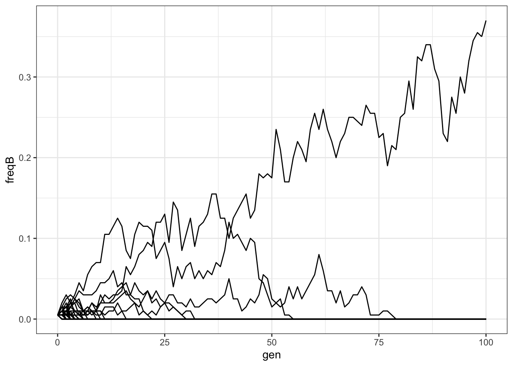
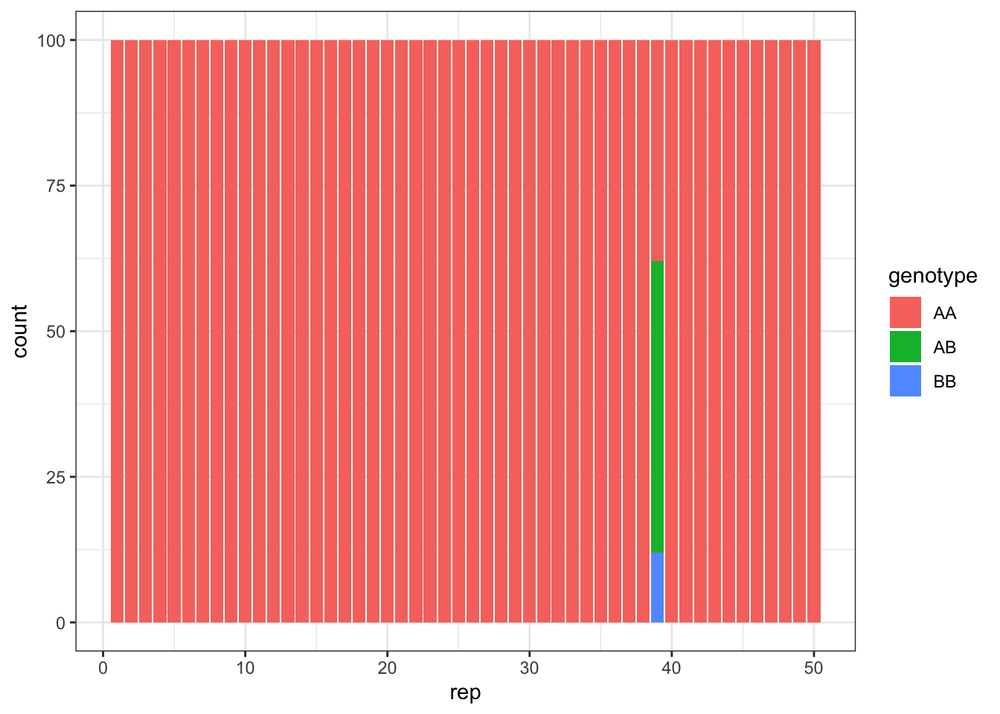

Last updated: 2022-02-21
Checks: 6 1
Knit directory: Bio326/
This reproducible R Markdown analysis was created with workflowr (version 1.7.0). The Checks tab describes the reproducibility checks that were applied when the results were created. The Past versions tab lists the development history.
The R Markdown file has unstaged changes. To know which version of the R Markdown file created these results, you’ll want to first commit it to the Git repo. If you’re still working on the analysis, you can ignore this warning. When you’re finished, you can run wflow_publish to commit the R Markdown file and build the HTML.
Great job! The global environment was empty. Objects defined in the global environment can affect the analysis in your R Markdown file in unknown ways. For reproduciblity it’s best to always run the code in an empty environment.
The command set.seed(20210128) was run prior to running the code in the R Markdown file. Setting a seed ensures that any results that rely on randomness, e.g. subsampling or permutations, are reproducible.
Great job! Recording the operating system, R version, and package versions is critical for reproducibility.
Nice! There were no cached chunks for this analysis, so you can be confident that you successfully produced the results during this run.
Great job! Using relative paths to the files within your workflowr project makes it easier to run your code on other machines.
Great! You are using Git for version control. Tracking code development and connecting the code version to the results is critical for reproducibility.
The results in this page were generated with repository version e042fad. See the Past versions tab to see a history of the changes made to the R Markdown and HTML files.
Note that you need to be careful to ensure that all relevant files for the analysis have been committed to Git prior to generating the results (you can use wflow_publish or wflow_git_commit). workflowr only checks the R Markdown file, but you know if there are other scripts or data files that it depends on. Below is the status of the Git repository when the results were generated:
Ignored files:
Ignored: .DS_Store
Ignored: .RData
Ignored: .Rhistory
Ignored: analysis/.DS_Store
Ignored: analysis/popgen.simu.nb.html
Untracked files:
Untracked: BIO326 URL genome annotatin computer lab_24_MAR_2021.docx
Untracked: BIO326-121VGenomesequencingBIO326-121VGenomsekvensering;verktøyoganalyser-BIO326-121VGenomesequencing_PhillipByronPope.pdf
Untracked: BIO326-RNAseq.pptx
Untracked: BIO326-genome/
Untracked: BIO326.MS.10th_FEB_2021function.pptx
Untracked: BIO326_Introduction to sequence technology and protocols_3rd_FEB_2021.pdf
Untracked: BIO326_Introduction to sequence technology and protocols_3rd_FEB_2021.pptx
Untracked: BIO326_RNAseq_5th_FEB_2021.pptx
Untracked: BIO326_SQK-RAD004 DNA challenge.docx
Untracked: BIO326_visual_30_APR_2021.pptx
Untracked: Bio326.2022.1.Rmd
Untracked: Bio326.genome.html
Untracked: Nanopore_SumStatQC_Tutorial.Rmd
Untracked: PCRdemo.R
Untracked: Pig_mutation_hist.csv
Untracked: PopGenBio326.322/
Untracked: RNAseq.Rplot.pdf
Untracked: Untitled.R
Untracked: [eng]BIO326-121VGenomesequencingBIO326-121VGenomsekvensering;verktøyoganalyser-BIO326-121VGenomesequencing_PhillipByronPope.mht
Untracked: [eng]BIO326-121VGenomesequencingBIO326-121VGenomsekvensering;verktøyoganalyser-BIO326-121VGenomesequencing_PhillipByronPope.pdf
Untracked: analysis/AnimalGenomics.Rmd
Untracked: analysis/AnimalGenomics2022.Rmd
Untracked: prepare.txt
Untracked: samples.xlsx
Untracked: test/
Untracked: trial/
Untracked: vis.xlsx
Untracked: workflowR.bio326.R
Unstaged changes:
Modified: analysis/popgen.simu.Rmd
Deleted: analysis/popgen_sim.Rmd
Note that any generated files, e.g. HTML, png, CSS, etc., are not included in this status report because it is ok for generated content to have uncommitted changes.
These are the previous versions of the repository in which changes were made to the R Markdown (analysis/popgen.simu.Rmd) and HTML (docs/popgen.simu.html) files. If you’ve configured a remote Git repository (see ?wflow_git_remote), click on the hyperlinks in the table below to view the files as they were in that past version.
| File | Version | Author | Date | Message |
|---|---|---|---|---|
| html | ea32b45 | mariesaitou | 2021-04-30 | Build site. |
| Rmd | fe68bb4 | mariesaitou | 2021-04-30 | wflow_publish(c(“analysis/popgen.simu.Rmd”), ) |
| html | c6338ae | mariesaitou | 2021-04-30 | Build site. |
| Rmd | 9688b44 | mariesaitou | 2021-04-30 | wflow_publish(c(“analysis/popgen.simu.Rmd”), ) |
Go to: https://orion.nmbu.no/ -> JupyterHub, select 4Gb -> rstudio-4.0.2
#copy the file from /net/fs-1/home01/mariesai/BIO326/popgen.simu.Rmd
cp /net/fs-1/home01/mariesai/BIO326/popgen.simu.Rmd .rep=50 # number of simulations
n_gen=100 # number of generations
generation <- 1
n_AA <- 99 # number of newborn individual with AA genotype
n_AB <- 1 # number of newborn individual with AB genotype
n_BB <- 0 # number of newborn individual with BB genotype
N <- n_AA + n_AB + n_BB # total number of individuals
sAA <- 0 # advantage AA genotype
sAB <- 0 # advantage AB genotype
sBB <- 0 # advantage BB genotype
results <- data.frame(matrix(ncol = 7, nrow = 0)) # dataframe to put the results infor (i in 1:rep){
# initialize
next_num <- c(n_AA, n_AB, n_BB)
freqA <- (2 * next_num[1] + next_num[2]) / (2 * N)
freqB <- 1 - freqA
results <- rbind(results, c(i, 0, next_num, freqA, freqB))
for (j in 1:n_gen){
# effective frequency of allele after survival
freqA <- ((2 * next_num[1]*(1 + sAA) + next_num[2] * (1 + sAB)) /
(2 * (next_num[1] * (1 + sAA) + next_num[2] * (1 + sAB) + next_num[3] * (1 + sBB)))) # frequency of A allele in the population
freqB <- 1 - freqA # frequency of B allele in the population
# next generation
next_num <- c(rmultinom(1, N, c(freqA * freqA, 2 * freqA * freqB, freqB * freqB)))
# new frequency of allele
freqA <- (2 * next_num[1] + next_num[2]) / (2 * N) # frequency of A allele in the population
freqB <- 1 - freqA
results <- rbind(results, c(i, j, next_num, freqA, freqB))
}
}
names(results) <- c("rep", "gen", "AA", "AB", "BB", "freqA", "freqB")head (results) rep gen AA AB BB freqA freqB
1 1 0 99 1 0 0.995 0.005
2 1 1 99 1 0 0.995 0.005
3 1 2 99 1 0 0.995 0.005
4 1 3 100 0 0 1.000 0.000
5 1 4 100 0 0 1.000 0.000
6 1 5 100 0 0 1.000 0.000# plot two figures
library(tidyverse)── Attaching packages ─────────────────────────────────────── tidyverse 1.3.1 ──✓ ggplot2 3.3.5 ✓ purrr 0.3.4
✓ tibble 3.1.6 ✓ dplyr 1.0.7
✓ tidyr 1.2.0 ✓ stringr 1.4.0
✓ readr 2.1.2 ✓ forcats 0.5.1── Conflicts ────────────────────────────────────────── tidyverse_conflicts() ──
x dplyr::filter() masks stats::filter()
x dplyr::lag() masks stats::lag()library(ggplot2)
# color=group, if the last freqA is 0 or 1, highlight them.
ggplot(results, aes(gen, freqB, group = rep)) + geom_line()+theme_bw()
| Version | Author | Date |
|---|---|---|
| c6338ae | mariesaitou | 2021-04-30 |
# [plot2]
# results_sum <- data.frame(cbind(c("AA", "AB", "BB"),
# colMeans(results[results$gen==n_gen,c("AA", "AB", "BB")]))) %>%
# mutate(x="proportion", X2 = as.numeric(X2))
# gen is the generation we want to see
results_sum <- pivot_longer(results[results$gen == n_gen,c("rep", "AA", "AB", "BB")],
cols=c("AA", "AB", "BB"), names_to="genotype", values_to="count")
ggplot(results_sum, aes(x=rep, y=count, fill=genotype)) +
geom_col() +theme_bw()
| Version | Author | Date |
|---|---|---|
| c6338ae | mariesaitou | 2021-04-30 |
sessionInfo()R version 4.1.2 (2021-11-01)
Platform: x86_64-apple-darwin17.0 (64-bit)
Running under: macOS Big Sur 10.16
Matrix products: default
BLAS: /Library/Frameworks/R.framework/Versions/4.1/Resources/lib/libRblas.0.dylib
LAPACK: /Library/Frameworks/R.framework/Versions/4.1/Resources/lib/libRlapack.dylib
locale:
[1] en_US.UTF-8/en_US.UTF-8/en_US.UTF-8/C/en_US.UTF-8/en_US.UTF-8
attached base packages:
[1] stats graphics grDevices utils datasets methods base
other attached packages:
[1] forcats_0.5.1 stringr_1.4.0 dplyr_1.0.7 purrr_0.3.4
[5] readr_2.1.2 tidyr_1.2.0 tibble_3.1.6 ggplot2_3.3.5
[9] tidyverse_1.3.1 workflowr_1.7.0
loaded via a namespace (and not attached):
[1] Rcpp_1.0.8 lubridate_1.8.0 getPass_0.2-2 ps_1.6.0
[5] assertthat_0.2.1 rprojroot_2.0.2 digest_0.6.29 utf8_1.2.2
[9] R6_2.5.1 cellranger_1.1.0 backports_1.4.1 reprex_2.0.1
[13] evaluate_0.14 highr_0.9 httr_1.4.2 pillar_1.7.0
[17] rlang_1.0.1 readxl_1.3.1 rstudioapi_0.13 whisker_0.4
[21] callr_3.7.0 jquerylib_0.1.4 rmarkdown_2.11 labeling_0.4.2
[25] munsell_0.5.0 broom_0.7.12 compiler_4.1.2 httpuv_1.6.5
[29] modelr_0.1.8 xfun_0.29 pkgconfig_2.0.3 htmltools_0.5.2
[33] tidyselect_1.1.1 fansi_1.0.2 withr_2.4.3 crayon_1.4.2
[37] tzdb_0.2.0 dbplyr_2.1.1 later_1.3.0 grid_4.1.2
[41] jsonlite_1.7.3 gtable_0.3.0 lifecycle_1.0.1 DBI_1.1.2
[45] git2r_0.29.0 magrittr_2.0.2 scales_1.1.1 cli_3.1.1
[49] stringi_1.7.6 farver_2.1.0 fs_1.5.2 promises_1.2.0.1
[53] xml2_1.3.3 bslib_0.3.1 ellipsis_0.3.2 generics_0.1.2
[57] vctrs_0.3.8 tools_4.1.2 glue_1.6.1 hms_1.1.1
[61] processx_3.5.2 fastmap_1.1.0 yaml_2.2.2 colorspace_2.0-2
[65] rvest_1.0.2 knitr_1.37 haven_2.4.3 sass_0.4.0